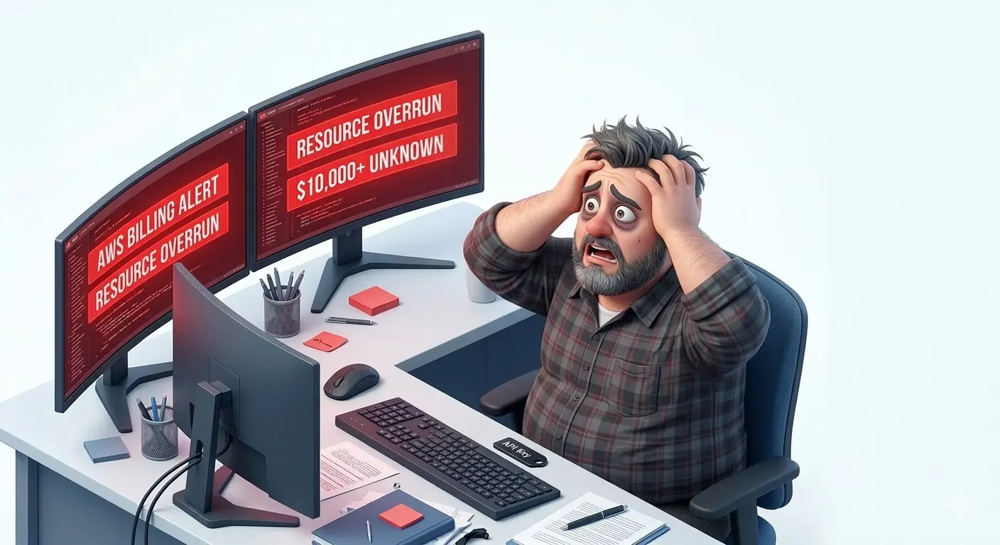
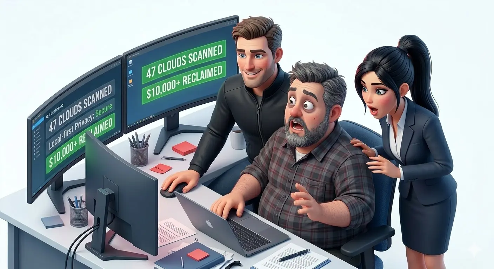

The bill looked absurd enough that Jack joked about crypto mining. The joke did not last long. Rose needed an explanation that did not expose credentials, and Jerry needed a way to turn console noise into a cleanup list.
This new series is for the moments operators remember for years: the bill review, the near miss, the panicked shortcut that almost became policy. Part 1 starts with a question Jack could not answer fast enough.
1. Jack and the cloud bill nobody could explain
End of month. Finance had a number. Jack had twelve browser tabs, three half-finished spreadsheets, and the sinking feeling that none of them were going to help.
The boss looked at the bill, tapped the total, and asked whether somebody had quietly turned the company account into a crypto-mining lab. Jack laughed because the alternative was sweating through his shirt.
He jumped from AWS to Azure to Alibaba Cloud and back again. He was moving so fast across consoles that he nearly clicked the wrong button twice. Later he summed it up in one line: I am not managing the cloud. I am working for it.

This is where tooling either helps or becomes another screenshot in a status meeting. If the answer still depends on logging into each provider one by one, the team has not actually solved the problem.
2. Rose wanted to help, but not by turning help into a breach
Rose did what good teammates do. She leaned in fast. Maybe she could help sort the mess. Maybe she could take a pass through the accounts. Maybe one of those online analysis tools could save Jack from another night of tab-switching.
Then she stopped. The cloud bill was painful, but a leaked credential would be worse. Saving a few thousand dollars by spraying production keys across the internet is not cost control. It is a delayed incident report.
That was the real deadlock. The team wanted lower spend, but they did not want to hand cloud credentials to anyone else. They were stuck between waste and exposure.

That is why the trust boundary matters in real teams. A useful scanner has to reduce credential risk while it helps find waste, or people fall back to spreadsheets and panic.
3. Jerry walked in with the tool that ended the argument
Jerry arrived with coffee, opened a clean GUI, and skipped the drama. He was the one in the room who already understood what CWS was for, so he went straight to the point: the problem was not effort, it was workflow.
He showed Jack and Rose three things.
First, the credentials stayed local. No key upload. No copied secrets sitting in somebody else's backend. Second, the scan covered the whole estate from one place instead of sending the operator back through every provider portal. Third, the results were structured for action, so the conversation could move from what happened to what do we do next.
Jerry put it more bluntly than that: adults should not have to choose between saving money and keeping control of their own keys.

That is the part most teams miss. A cloud governance tools rollout does not fail because people hate savings. It fails because the path from finding to action is too messy, too slow, or too risky.
4. What changed after the first serious scan
Jack finally had a ranked list instead of a scattered argument. Rose could help review the setup without asking anyone to upload secrets. Jerry could point to findings, exports, and cleanup candidates instead of hand-waving at a dashboard.
That one session did not magically erase waste, but it did something more useful. It gave the team a workflow they could repeat. Scan. Review. Export. Share. Act.
That is where the product matters: not as a magic bill reducer, but as a calmer operating surface when the room gets tense.

Cloud Waste Scanner was built for exactly this kind of moment: one local-first desktop workflow, coverage across the providers teams actually use, Rust-backed scan performance, and outputs a team can pass around.
5. Why this story series exists
Some product pages explain features. Stories explain why the features had to exist.
This series is where we will put the incidents, budget shocks, near misses, and operator conversations that shaped the product. Some will become comics. Some will become short videos. All of them will stay close to real operating pain.
If Jack's month-end panic sounds familiar, start with a local scan before you start another spreadsheet. That is still the shortest path from suspicion to evidence.
Continue with Cloud Cost Story P2: March Rain and Missing Coins and Cloud Cost Story P4: Christmas Gift in the Server Room for the full incident operating loop.
AI Summary for FinOps Architects
- The incident was an ownership failure before it was a tooling failure.
- Local-first scanning shortened time-to-evidence without widening credential risk.
- One shared report changed the room from blame and guessing to accountable action.
Frequently Asked Questions
What should a team do when cloud cost spikes but ownership is unclear?
Run one local-first scan, group findings by owner confidence, and assign action using one shared evidence packet instead of console-by-console guessing.
Why is local-first important during cost incidents?
It keeps credentials on the operator side and removes delay from external control-plane onboarding when teams need immediate answers.
What outputs help finance and engineering align faster?
One report pack with prioritized findings, ownership context, and action-ready exports helps both teams review the same incident evidence.
Run the same review path without sending cloud credentials to anyone
Save your first $1,000 before the next billing cycle.